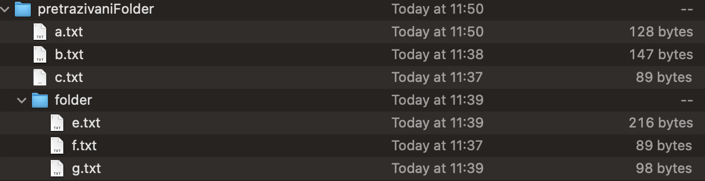

Potrebno je implementirati klasu FileVisitorPasswordFinder koja implementira sučelje FileVisitor<Path> tako da obilazi zadani direktorij i njegove poddirektorije. Klasa ima jedan String atribut naziva resultDirectoryPath čiju vrijednost postavlja konstruktorom te je kasnije nije moguće mijenjati (ali je njeno dohvaćanje potrebno omogućiti). Dodatno, klasa treba implementirati sljedeće funkcionalnosti:
u svakom direktoriju treba pronaći sve .txt datoteke koje u sebi sadrže niz znakova password (koji se može nalaziti i unutar drugog niza znakova, npr. password:dd), te ih prekopirati u odredišni direktorij (resultDirectoryPath). Pritom, u odredišnom direktoriju (resultDirectoryPath) treba za svaki direktorij koji se obilazi stvoriti jednu dodatnu .txt datoteku identičnog naziva kao i taj direktorij, a u koju će se upisivati samo one linije .txt datoteka u tom direktoriju koje sadrže riječ password. Ako nema takvih linija u određenom direktoriju, nije potrebno stvarati takvu datoteku;
na standardni izlaz potrebno je ispisati ime svake datoteke u kojoj je pronađena riječ password i njenu veličinu u bajtovima:
<ime_datoteke> = <size_in_bytes>
Primjer korištenja:
Ako se implementiranim FileVisitorom, kojem je u konstruktoru vrijednost atributa resultDirectoryPath postavljena na /res/oopIspit/ pretražuje direktorij koji ima sljedeću strukturu i datoteke veličina vidljivih na istoj slici:

a pritom sljedeće datoteke između ostalih linija, sadrže i linije u kojima je riječ password:
a.txt
password:bla bla
password mi je super password
b.txt
password bla bla bla bla bla
e.txt
password st19
potrebno je u direktoriju /res/oopIspit/ stvoriti datoteku pretrazivaniFolder.txt koja će po obilasku imati sljedeći sadržaj (redoslijed linija nije važan):
password:bla bla
password mi je super password
password bla bla bla bla bla
i datoteku folder.txt sadržaja:
password st19
Osim navedene dvije datoteke, odredišni direktorij će sadržavati i kopije datoteka a.txt, b.txt i e.txt
Također, na standardnom izlazu biti će sljedeći ispis nakon obilaska: a.txt = 121 b.txt = 147 e.txt = 201
uz napomenu da u ispisu može biti i cijela putanja do datoteke (provjerava se samo da linija sadrži zadnji dio, pokazan u gornjem u primjeru).
Dodatna napomena:
File, već samo Path i java.nio paket.hr.fer.oop.